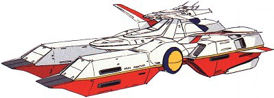

| Pegasus Class "Grey Phantom" Earth Federation Space Force Mobile Suit Carrier |
|
|  | |
General and Technical Data |
|
|
Unit type: all-environment mobile suit carrier Operator: Earth Federation Dimensions: overall length 266 meters; overall width 180 meters; overall height 90 meters Weight: 51000 tons Construction: Titanium alloy Propulsion: 2 x jet/rocket engine; Minovski-craft system Hangar capacity: 9 mobile suits Launch catapults: 2 Fixed armaments: 1x port 2-barrel mega particle cannon turret, 1x starboard 2-barrel mega particle cannon turret; 6 x large missile launcher; 12 x 2-barrel antiaircaft turret Bridge |
 RPG quick stats sheet
RPG quick stats sheet | Technical and Historical Notes | |
|
During the disastrous Lourm Campaign, Federation fleet commanders begrudging learned (sometimes moments before their flagships exploded from under them) that, despite the EF Space Force's overwhelming battleship superiority compared to the Zeon Duchy's would not be enough to win the war. Federation engineers threw existing designs out the window and set out to create an entirely new class of ship designed to carry mobile suits.
The Pegasus-class was the final culmination of those efforts. Federal engineers created two catamaran-style hulls and attached them together with a central fuselage containing the reactor, command deck, and Minovski-craft system (more on this later). Each of the outboard hulls contained its own mobile suit hangar, each with its own launch catapult and space for four mobile suits. A central corridor connects the two, and also stores a mobile suit of its own, for a total of nine. Due to its ablative hull plating (painted in red), it can re-enter Earth's atmosphere by itself, and also acheive escape velocity on its own power (again with the Minovski-craft system). The Pegasus is armed with two large mega particle cannons, mounted behind the large yellow firing domes on either side of the ship's hull. The domes slide open and the cannons extend from within when preparing to fire. Two large missile launchers are also mounted on each side with a third rear-facing pair mounted further back on the hull for the purpose of discouraging close pursuit. Twelve antiaircraft turrets are mounted in concealed firing ports that also slide open when preparing to fire. The Pegasus' most radically inventive feature is its Minovski-craft system. Essentially the Federation's version of Zeon's Minovski-craft compressor in play on some of their mobile armors, it allows the Pegasus to fly in atmosphere for virtually unlimited amounts of time. Many Pegasus class ships would be built to slightly different modifications, but the only one to be produced in any sort of limited production capacity would be this model, nicknamed the "Grey Phantom". |
|